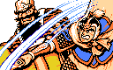

至极生乱，乱极入治
东汉末年，持续了二百年之久的太平盛世终于纷乱了
大贤良师张角率领黄巾军在各地起事
一时间，生灵涂炭，怨声载道，汉王朝已无力平乱
值此乱世，涌现出了三位英雄，立志复兴汉室
他们是
中山靖王刘胜的后裔刘备——刘玄德
文武双全的美髯公关羽——关云长
有万夫不挡之勇的张飞——张翼德
不求同年同月同日生，但求同年同月同日死
桃园结义的兄弟三人招募义军，讨伐黄巾
曹操等人也加入了讨伐黄巾军的战斗
他们协力激战，终于战胜了张角，黄巾军被镇压了
但是，乱世并未结束
在平叛中按兵不动保存实力的西凉太守董卓
借机进入都城洛阳，专政弄权，无恶不作
刘备等人又举兵声讨，终于消灭了董卓，天下似乎又太平了
但是……
乱世还刚刚开始
奸雄曹操趁乱势逐步扩大力量，想一统天下
淮南袁术无视汉王朝，妄自称帝
还有……
乱世还在继续
徐州城内宫殿
皇帝：“刘皇叔，淮南袁术十恶不赦，请皇叔去讨伐袁术。”
曹操：“玄德，河北袁绍窥视我国，令我无法抽身。就派朱灵露昭祝您攻打袁术吧。”
朱灵露昭加入了队伍。
将出宫门,关羽追上
关羽：“兄长，讨伐袁术，吾愿为先锋，当开先路。”
关羽加入了队伍。
宫门外桥上，张飞赶来
张飞：“让俺与兄长同去讨伐袁术吧。不然，我要憋死了。”
于是张飞加入了队伍。
| 人物 | 头像 | 武力 | 智力 | 速度 | 武器 |
|---|---|---|---|---|---|
| 刘备 | 130 | 200 | 85 | 剑 | |
| 关羽 | 245 | 180 | 160 | 刀 | |
| 张飞 | 255 | 60 | 120 | 枪 | |
| 朱灵 | 120 | 75 | 45 | 剑 | |
| 露昭 | 95 | 50 | 65 | 枪 |
徐州城内
董承：“吾等歃血为盟，共灭曹贼，皇叔何故突然离京？”
刘备：“曹操心思慎密，为防其识破吾等之计，出城暂避尔。”
董承：“请多加小心。”
？徐州城南，讨伐袁术途中，纪灵已待多时
纪灵：“织席贩履之徒，拿命来吧！”
| 人物 | 头像 | 武力 | 智力 | 速度 | 攻击 | 防御 | 兵力 |
|---|---|---|---|---|---|---|---|
| 纪灵 | 155 | 70 | 100 | 20 | 15 | 270 | |
| 梁刚 | 85 | 45 | 45 | 15 | 12 | 240 | |
| 梁纪 | 105 | 90 | 65 | 15 | 12 | 220 |
？纪灵战败
纪灵：“杀，杀出条血路。”
城东山洞前
袁胤：“想要由此通过，先过我这一关”
| 人物 | 头像 | 武力 | 智力 | 速度 | 攻击 | 防御 | 兵力 |
|---|---|---|---|---|---|---|---|
| 袁胤 | 60 | 165 | 60 | 20 | 15 | 320 | |
| 李丰 | 140 | 65 | 75 | 15 | 12 | 270 | |
| 陈兰 | 160 | 60 | 55 | 15 | 12 | 250 |
城东山洞内
袁术：“到底来了，贩履之夫。吾定胜汝。”
| 人物 | 头像 | 武力 | 智力 | 速度 | 攻击 | 防御 | 兵力 |
|---|---|---|---|---|---|---|---|
| 袁术 | 190 | 135 | 115 | 20 | 20 | 400 | |
| 纪灵 | 155 | 70 | 100 | 20 | 15 | 270 | |
| 乐就 | 150 | 115 | 70 | 15 | 12 | 150 | |
| 雷薄 | 175 | 80 | 80 | 15 | 12 | 280 | |
| 张勋 | 120 | 35 | 85 | 15 | 10 | 270 |
讨伐袁术胜利，回城，徐州城城外
朱灵：“玄德公，现在伪帝袁术已败，吾等也不必逗留，早回都城，向丞相缴令。”
朱灵、露昭回城去了
徐州城内
陈登：“刘使君，徐州太守车胄奉曹操之命，要加害于你，请多加小心。”
？
车胄：“刘备，汝计已被丞相识破，董承、王子服、种辑、吴子兰、吴硕五位反臣已都被诛杀。你还不下马受缚，更等何时？”
| 人物 | 头像 | 武力 | 智力 | 速度 | 攻击 | 防御 | 兵力 |
|---|---|---|---|---|---|---|---|
| 车胄 | 140 | 85 | 75 | 35 | 25 | 700 |
斩杀车胄后
陈登：“杀了车胄后，曹操会亲自率军报仇，此城很难守住，只能投奔河北的袁绍，别无他路。郑玄是袁绍的老师，若得他致书与袁绍，袁绍必会收留我等。虽在下才疏学浅，但也愿效微薄之力，不知皇叔肯收纳否？”
？陈登加入队伍
| 人物 | 头像 | 武力 | 智力 | 速度 | 武器 |
|---|---|---|---|---|---|
| 陈登 | 50 | 160 | 30 | 剑 |
？出徐州城，投奔袁绍
徐州城门口,曹操大军已包围徐州城
曹操：“车胄是我的亲信，今日我要亲自出马。”
陈登：“曹操亲自出马，看来徐州是保不住了。我们还是撤退，去投奔袁绍才是上策。”
| 人物 | 头像 | 武力 | 智力 | 速度 | 攻击 | 防御 | 兵力 |
|---|---|---|---|---|---|---|---|
| 曹操 | 215 | 230 | 155 | 230 | 230 | 9800 | |
| 许褚 | 240 | 50 | 140 | 220 | 220 | 9600 | |
| 典韦 | 230 | 65 | 135 | 220 | 220 | 9400 | |
| 张辽 | 230 | 205 | 175 | 235 | 240 | 9400 | |
| 荀彧 | 95 | 240 | 85 | 220 | 220 | 9200 |
？实力悬殊，只能撤退
战乱中，桃园三兄弟失散。刘备去投奔袁绍。
？徐州城以北，郑玄住处
郑玄：“刘使君，这样如何？”
刘备看信
郑玄：“希望这信能起作用。后会有期。”
冀州城内宫殿
袁绍：“你杀了我弟弟袁术，岂能留你。”
使用信后
袁绍：“哦！是吾师郑玄的信吗？让我看看。嗯，言之有理，我若杀了你，只会让曹操高兴。联手干吧，和我军猛将颜良一起攻占白马坡。”
颜良加入队伍
| 人物 | 头像 | 武力 | 智力 | 速度 | 兵力 | 武器 |
|---|---|---|---|---|---|---|
| 颜良 | 230 | 55 | 95 | 600 | 枪 |
白马坡第一战
| 人物 | 头像 | 武力 | 智力 | 速度 | 攻击 | 防御 | 兵力 |
|---|---|---|---|---|---|---|---|
| 魏续 | 170 | 105 | 90 | 25 | 20 | 480 | |
| 宋宪 | 150 | 90 | 100 | 25 | 15 | 480 | |
| 吕虔 | 170 | 100 | 105 | 35 | 20 | 450 |
白马坡首战大破曹兵
颜良所过之处，势如破竹，血流成河，曹兵闻风丧胆，溃不成军。
白马坡第二战
| 人物 | 头像 | 武力 | 智力 | 速度 | 攻击 | 防御 | 兵力 |
|---|---|---|---|---|---|---|---|
| 乐进 | 125 | 75 | 55 | 20 | 20 | 500 | |
| 于禁 | 130 | 115 | 45 | 15 | 30 | 820 | |
| 程昱 | 75 | 225 | 65 | 20 | 20 | 480 | |
| 李典 | 130 | 100 | 105 | 30 | 20 | 750 |
白马坡第二战再破曹兵
颜良所过之处，势如破竹，血流成河，曹兵闻风丧胆，溃不成军。
白马坡第三战
| 人物 | 头像 | 武力 | 智力 | 速度 | 攻击 | 防御 | 兵力 |
|---|---|---|---|---|---|---|---|
| 神秘将军 | 245 | 180 | 160 | 80 | 180 | 3000 |
白马坡第三战，颜良被神秘将军一刀斩于马下
刘备：“此人甚是勇猛，难以抵挡，若不撤退，会全军覆没，撤！”
刘备撤回冀州城
冀州城内宫殿
袁绍：“什么？颜良被杀？真难以置信。”
刘备：“真厉害。”
袁绍：“文丑勇猛胜于颜良，派文丑出战定能得胜。”
文丑：“定要为颜良报仇血耻！”
文丑也参战了
| 人物 | 头像 | 武力 | 智力 | 速度 | 兵力 | 武器 |
|---|---|---|---|---|---|---|
| 文丑 | 235 | 45 | 70 | 680 | 枪 |
白马坡战场
文丑：“没什么可怕。”
神秘将军：“放马过来，吃我一刀！”
文丑被神秘将军击败
文丑和颜良一样也被斩于马下了
刘备：“守不住了，快撤退！”
刘备撤回冀州城
冀州城内宫殿
袁绍：“杀颜良文丑的难道不是你弟关羽吗？”
刘备：“在下被曹军围困，未见其面，云长亦不知我在河北。”
袁绍：“吾若得云长，胜颜良文丑十倍。”
刘备：“吾派人投书，云长必会星夜来投。”
关羽身在曹营，思念兄长，旦夕烦恼。忽一日，有密探来访。
陈震：“吾乃南阳陈震是也，有刘皇叔亲笔信。”
关羽：“是兄长来信。人生天地间，无始终者，非君子也。烦公达知兄长，容某辞却曹操，奉嫂来见。”
关羽留书致曹操曰：羽少事皇叔，誓同生死。今探知故主现在河北，思旧日之盟岂容违背，今特告辞，有余恩未报愿待来日。
关羽挂印封金，辞别相府。
城门口
守卫：“站住，汝乃何人？”
关羽：“吾乃关羽，开门！”
守卫：“无公文不能开。”
关羽：“若如此，汝比颜良文丑若何？”
守卫：“在下不敢。”
城外村子
胡班父：“是谁啊？”
关羽：“行路人，借宿。”
胡班父：“欢迎。”
翌日
胡班父：“请拿上这封信，我儿胡班在荥阳太守王植手下当差。要去河北，荥阳是必经之地。”
关羽获得胡班家书
第一关
孔秀：“有曹丞相的公文吗？没有就不能通行。”
关羽：“曹丞相已准我离开。”
孔秀：“我们并未接到将令。”
关羽：“若如此，只能动武了。”
孔秀：“呸！休想吓我，等闲之辈，拿命来吧！”
| 人物 | 头像 | 武力 | 智力 | 速度 | 攻击 | 防御 | 兵力 |
|---|---|---|---|---|---|---|---|
| 孔秀 | 75 | 70 | 55 | 25 | 12 | 320 |
关羽将孔秀斩于马下
第二关
韩福：“休想过我关口。”
关羽：“不想要你的脑袋了吗？”
韩福：“少废话，拿命来！”
| 人物 | 头像 | 武力 | 智力 | 速度 | 攻击 | 防御 | 兵力 |
|---|---|---|---|---|---|---|---|
| 韩福 | 85 | 55 | 128 | 25 | 12 | 350 |
韩福也被关羽斩于马下
第三关
卞喜：“是在白马坡斩颜良诛文丑的关羽吗？”
关羽：“正是。”
卞喜：“将军神勇，海内皆知。今天借此良机，在镇国寺为你设宴洗尘，敬请将军光临。”
关羽：“非常感谢。”
镇国寺内
卞喜：“久仰将军大名，今日得见，三生有幸，将军请满上一杯。”
关羽：“吾料就内必有麻药。”
卞喜：“天机泄露，左右快下手。”
| 人物 | 头像 | 武力 | 智力 | 速度 | 攻击 | 防御 | 兵力 |
|---|---|---|---|---|---|---|---|
| 卞喜 | 100 | 90 | 90 | 25 | 12 | 380 |
然卞喜不敌关羽，被斩于刀下
第四关
胡班：“荥阳太守王植对你没有敌意，请过关。”
关羽：“若如此，烦将军准吾等住宿。”
胡班：“容吾去准备。”
驿馆前
胡班：“且在此暂宿一宿，宁日登途未迟。”
使用胡班家书
胡班：“若非家父之信，险些误杀忠良了。王植心怀不仁，约于三更放火，加害将军。吾先去开城门，请将军赶快收拾出城。”
关羽速离荥阳
| 人物 | 头像 | 武力 | 智力 | 速度 | 攻击 | 防御 | 兵力 |
|---|---|---|---|---|---|---|---|
| 王植 | 50 | 130 | 45 | 25 | 12 | 400 |
第五关
秦琪：“吾乃秦琪，你是何人？”
关羽：“关羽关云长，汝知吾一路斩杀拦截者乎？”
秦琪：“你只杀得无名下将，敢杀我吗？”
| 人物 | 头像 | 武力 | 智力 | 速度 | 攻击 | 防御 | 兵力 |
|---|---|---|---|---|---|---|---|
| 秦琪 | 90 | 50 | 75 | 25 | 12 | 420 |
秦琪被关羽斩于刀下
关羽速登船只，往河北去了
关羽到达黄河北岸，往北行军，却被曹将夏侯惇赶上
夏侯惇：“关羽休走，汝于路杀人，又斩吾部将，无礼太甚。我特来擒你，献与曹丞相发落。”
| 人物 | 头像 | 武力 | 智力 | 速度 | 攻击 | 防御 | 兵力 |
|---|---|---|---|---|---|---|---|
| 夏侯惇 | 230 | 155 | 115 | 10 | 250 | 1400 |
一回合后，后面一骑飞来
兵士：“这有曹丞相的亲笔公文，令所有关口一律放行。”
夏侯惇：“我只活捉他去见丞相，待丞相自放他。”
再战一回合，张辽出现了
张辽：“奉曹丞相旨意，云长所到之处，均须放行，否则，就是违抗曹丞相旨意。”
夏侯惇退去
关羽：“曹丞相的心意我谢了，杀了他手下重将，请代我谢罪。”
青州城
张飞：“叛徒关羽，你小子投降了曹操，又来骗我，我今日与你拼了！”
关羽：“三弟休要鲁莽。”
张飞：“我虽鲁莽，你却休想骗我。”
关羽：“我怎么做，你才能信我？”
张飞：“……远处尘埃起处，正是曹军人马，你若有心，快去斩了来将。”
关羽：“好，贤弟看我斩此来将以表真心。”
青州城外
蔡阳：“关羽，还我外甥秦琪的命来！”
| 人物 | 头像 | 武力 | 智力 | 速度 | 攻击 | 防御 | 兵力 |
|---|---|---|---|---|---|---|---|
| 蔡阳 | 180 | 120 | 115 | 35 | 25 | 680 |
斩杀蔡阳后
张飞大哭：“兄长，对不住，请多原谅，俺也一起去吧。”
关羽：“那自然好。”
赵云：“在下赵云赵子龙，听说张飞将军在青州，特来相投。今得相随，大称平生，虽肝脑涂地，无恨矣。”
于是又添一员大将
| 人物 | 头像 | 武力 | 智力 | 速度 | 武器 |
|---|---|---|---|---|---|
| 赵云 | 240 | 200 | 180 | 枪 |
冀州城南附近山寨
周仓：“汉军很少到地方来，拿出勇气来干吧。”
几回合后
周仓：“真，真厉害。肯定是有名的武将，敢问将军大名。”
关羽：“关羽，关云长。”
周仓：“实在白马坡杀颜良诛文丑的关羽，久慕将军，今日幸会，愿将军不弃收为步卒。”
周仓加入队伍
| 人物 | 头像 | 武力 | 智力 | 速度 | 武器 |
|---|---|---|---|---|---|
| 周仓 | 165 | 80 | 75 | 斧 |
冀州城南关家村
关定：“非常感谢您消灭了山贼，为了报答您，我把我儿送到刘备帐下效命。”
关平拿着关羽的信去找刘备
冀州城内
一名男子来找刘备
关平：“刘皇叔，这里有关羽的信。”
刘备：“关羽，太好了。嗯，都到城南了，我马上去接。”
关平：“我陪你一起去吧。”
关平跟着一块去了
冀州城内宫殿
玄德入见袁绍，告曰：“刘表镇守荆襄九郡，兵精粮足，宜与相约，共攻曹操。”
袁绍：“恐彼未肯相从。”
刘备：“此人是备同宗，备往说之，必无推阻。”
袁绍大喜从之
冀州城门
郭图：“你这不讲信用的大耳贼，今若放你，倘他日得势，必加害于我袁绍主公，修得溜走。”
| 人物 | 头像 | 武力 | 智力 | 速度 | 攻击 | 防御 | 兵力 |
|---|---|---|---|---|---|---|---|
| 郭图 | 195 | 100 | 65 | 25 | 15 | 800 | |
| 田丰 | 155 | 190 | 35 | 25 | 15 | 580 |
击败郭图军
城南相聚
关羽：“正是，当日手足似瓜分，信断音稀杳不闻。今日君臣重聚义，正如龙虎会风云。”
兄弟重逢，各相拜诉，感叹不已。欢喜无限，连饮数日。
关定：“欲谴次子关平跟随关将军，肯容纳否？”
刘备：“既蒙长者厚意，吾弟尚未有子，今即以贤郎为子，如何？”
关平拜关公为父，武力智力各增10点
| 人物 | 头像 | 武力 | 智力 | 速度 | 武器 |
|---|---|---|---|---|---|
| 关平 | 170 | 120 | 100 | 刀 |
关定大喜，设宴款待，众将安歇。
随着时光的流逝，中原势力版图有了很大的变化。
曹操挟天子以令诸侯，把自己的敌人逐一消灭了。
即使是称霸北方一时的袁绍，在曹操面前亦遭到惨败。
曹操急欲吞并天下，但却有两位难对付的英雄：
一位是虎踞江南的吴王孙权孙仲谋；
另一位是胸怀大略的皇叔刘备刘玄德。